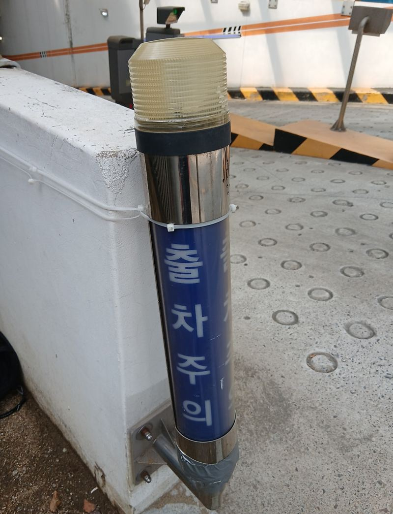
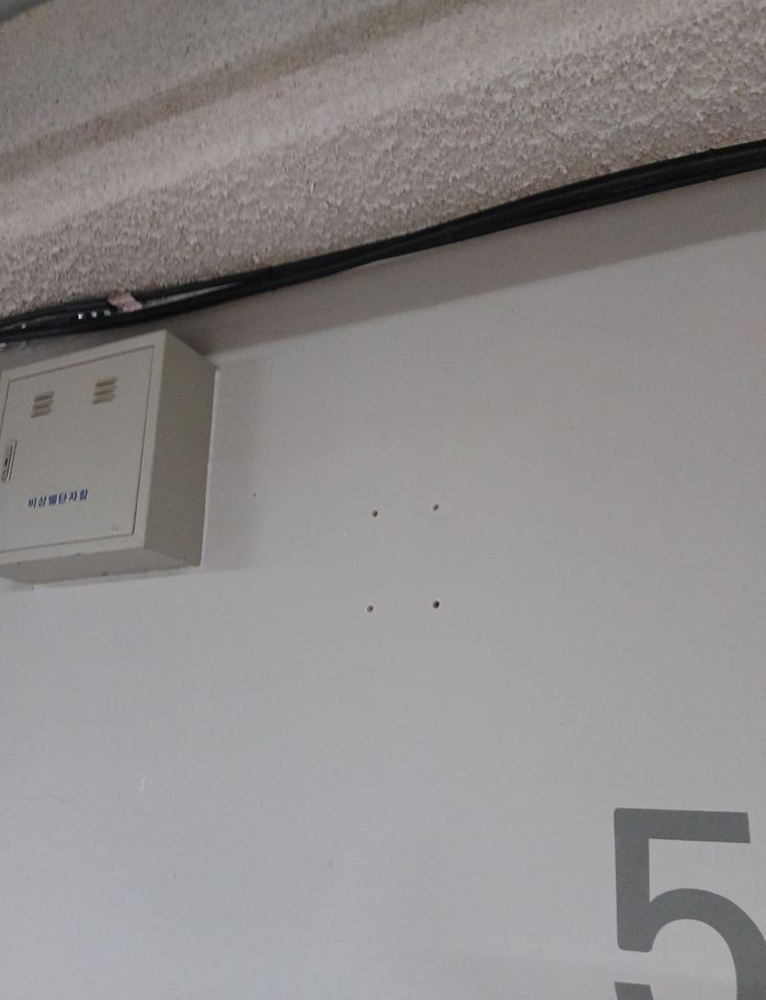
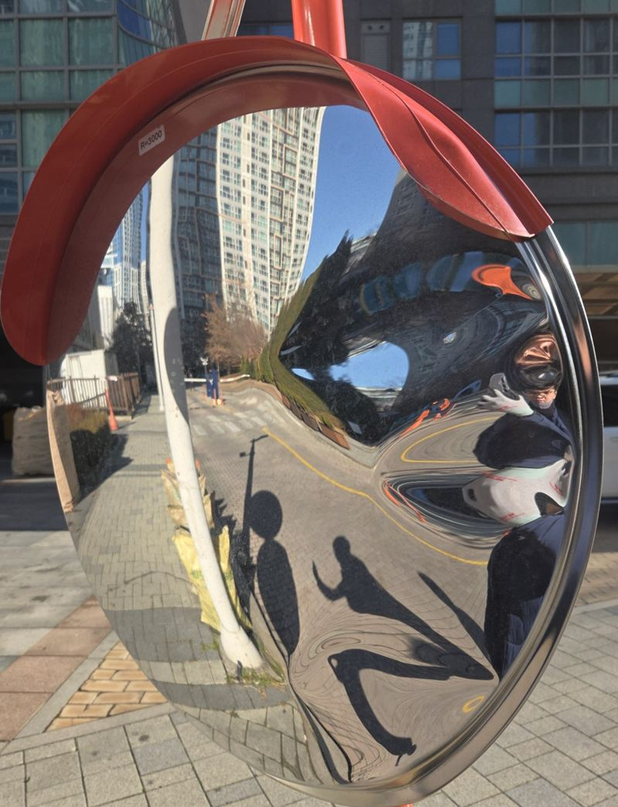
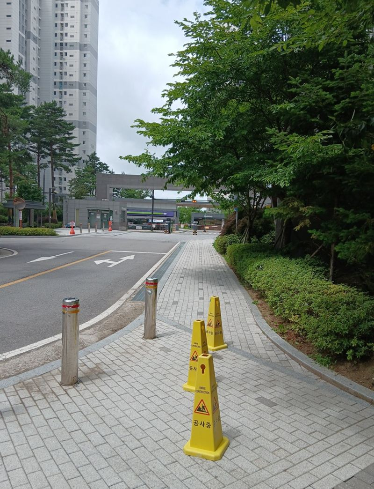
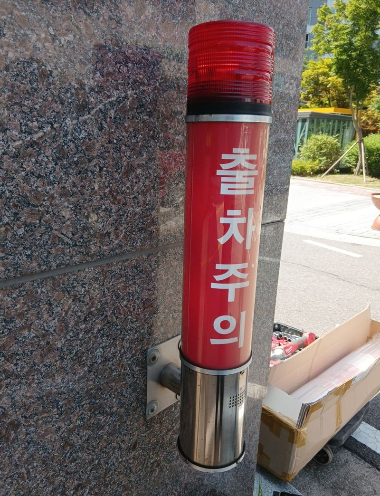
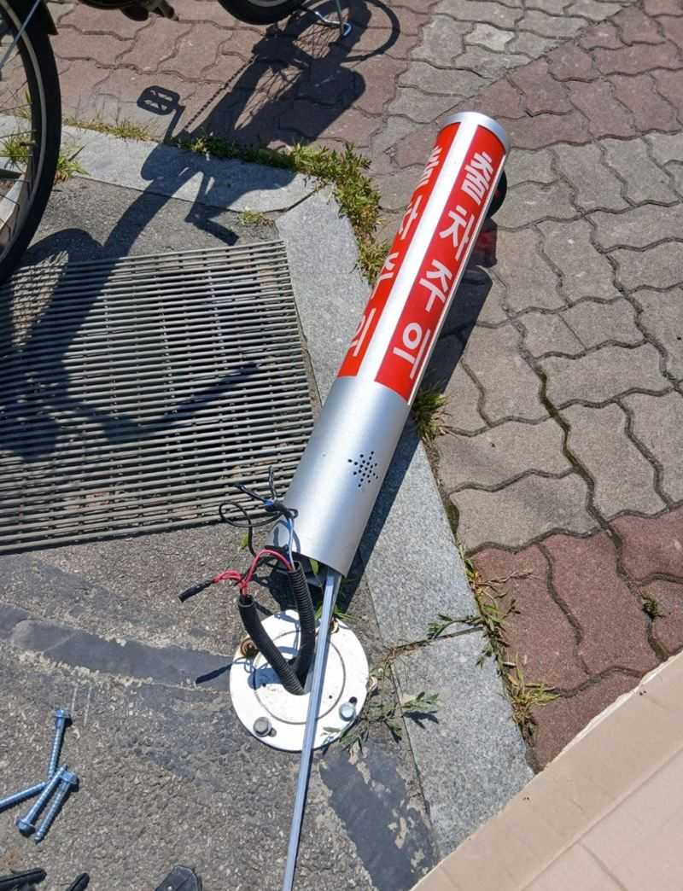

홈 › 반사경·출차등
도로 반사경·출차등
설치와 교체 방법
지하주차장 출구, 단지 안 꺾이는 길, 학교 앞 골목은 차와 사람이 서로 안 보이는 자리예요. 반사경과 출차 경광등이 그 사각지대를 보여 줘요. 차에 받혀 휘었거나 불이 안 들어오는 시설은 미루지 말고 손보는 게 좋아요.

설치 방식은 두 가지
- 지주형바닥에 기둥을 세우고 그 위에 반사경을 다는 방식이에요. 기둥 앙카 고정이 중요해요.
- 벽부형건물 벽이나 담에 브라켓으로 붙이는 방식이에요. 기둥을 세울 자리가 없는 곡선 도로에 많이 써요.
출차 경광등은 주차장 출구 벽에 달아 차가 나올 때 불빛과 소리로 알려요. 벽에서 떨어졌거나 높이가 안 맞으면 다시 고정하고 위치를 조정해요.
위치를 정하는 기준
반사경은 운전자 눈높이에서 반대편 차나 보행자가 보이는 각도가 핵심이에요. 설치 전에 실제로 그 길을 운전하는 방향에서 서서 거울 각도를 맞춰 봐요. 휘어진 기둥을 교체할 때는 받힌 방향을 보고 위치를 조금 옮기기도 해요.
반사경 설치 전에 많이 찾아보시는 것
지역별 반사경·출차등 현장
 천안 볼록거울 반사경 기둥 휘어짐 교체 방법천안
천안 볼록거울 반사경 기둥 휘어짐 교체 방법천안
안양 출차주의 경광등 탈락 시 수리·교체 방법안양 · 블로그 현장기 ↗
군포 주차장 코너 반사경 설치 비용군포 · 블로그 현장기 ↗
인천 차로 반사경 지주 휘어짐 수리·교체 방법인천 · 블로그 현장기 ↗
인천 미추홀 곡선도로 벽부형 반사경 설치 방법인천 미추홀 · 블로그 현장기 ↗
인천 남동구 출차주의 경광등 수리·교체 방법인천 남동 · 블로그 현장기 ↗ 서초 반사경 설치 목적과 위치 정하는 방법서울 서초 · 블로그 현장기 ↗
서초 반사경 설치 목적과 위치 정하는 방법서울 서초 · 블로그 현장기 ↗ 시흥 초등학교 앞 반사경 설치 과정시흥 · 블로그 현장기 ↗
시흥 초등학교 앞 반사경 설치 과정시흥 · 블로그 현장기 ↗
잠실 출차등 수리 방법과 점검 포인트서울 송파 · 블로그 현장기 ↗
반사경·출차등 질문
거울만 깨졌는데 기둥은 그대로 써도 되나요?
기둥이 곧고 단단하면 거울만 교체해요. 기둥이 휘었으면 함께 바꾸는 게 안전해요.
공공 도로에도 설치해 주나요?
공공 도로는 관할 기관 승인이 필요할 수 있어요. 단지·건물 부지 안이라면 관리 주체 결정으로 진행해요.
설치하거나 고칠 위치를 운전자 방향에서 찍어 보내 주세요.
전화 상담 010-4517-9872